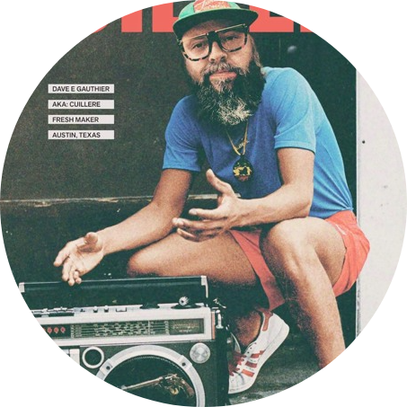

|  |
CuillereCo founder of Jack Junkies. Cuillere is a House music producer and DJ known for his deep, funky, underground house sound. Fueled by a passion for disco, funk, and hip hop, Cuillere has been steadily gaining momentum in the music world for years. Starting out DJ’ing a number of raves in the early nineties, Cuillere held down club residencies across the United States. Cuillere joined forces with Jolby to create the crew “Jack Junkies” in 1999. They went on to add amazing talents such as DJ Jung, Sammie, Sprout, Onasile and Jericho. But like any DJ, Cuillere dreamt of producing house music, and before long he hooked up with Busy and Crux. Together they released their first single on DJ Sneak’s label ‘Oomph’. He followed that success with releases on Lingo and Photo Records as ‘Busy N Spoon’. The whole crew seemed to be on fire. Cuillere took his career to the next level as a solo artist with a series of high profile EPs for record labels such as Greenhouse, Treasered Grooves, Panhandle, Lingo, Viva, and more. Riding that momentum, Cuillere has many new projects in the works., you can catch him on his radio show " SUNDAE SESSIONS" on www.sugarshackrecordings Sundays from 10-12 cst. |
| Mixing | ☠︎☠︎☠︎☠︎☠︎☠︎☠︎☠︎ |
| Streaming | ☠︎☠︎☠︎☠︎☠︎☠︎☠︎☠︎ |
| Producing | ☠︎☠︎☠︎☠︎☠︎☠︎☠︎☠︎ |
| Music Selection | ☠︎☠︎☠︎☠︎☠︎☠︎☠︎☠︎ |